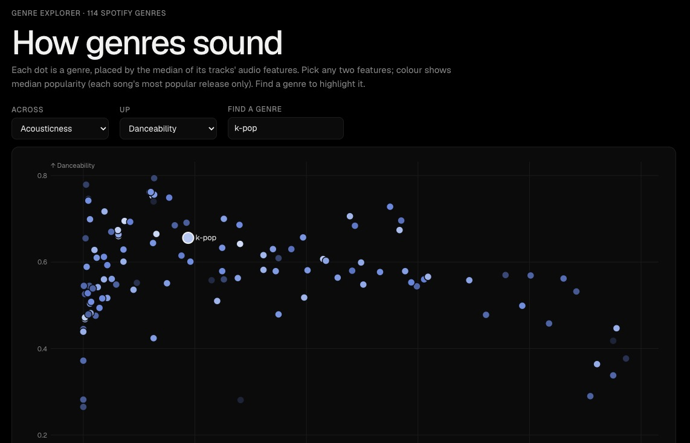
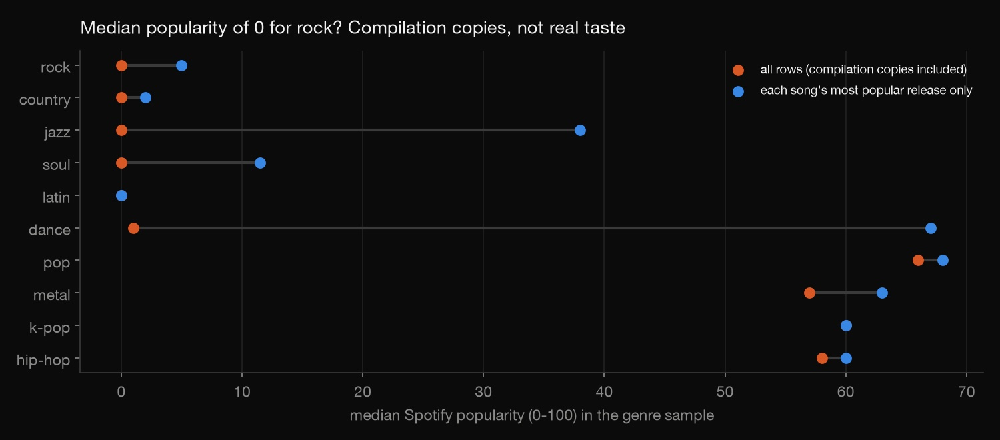
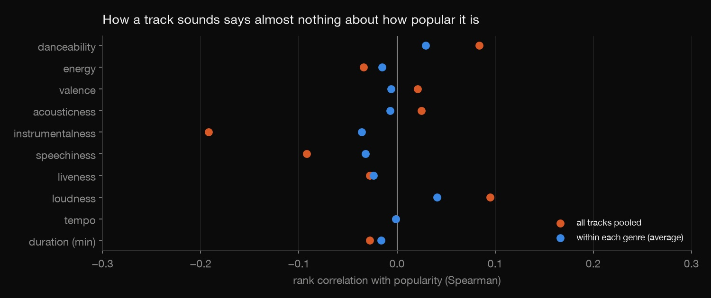
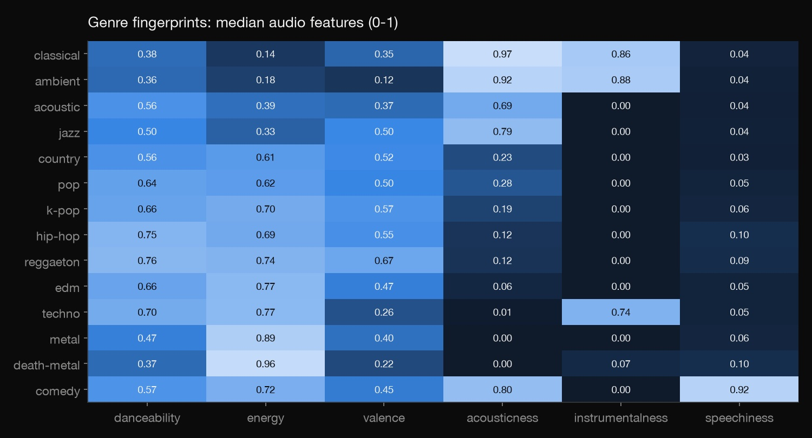

Python · Exploratory analysis · 2026-10
Spotify: What Makes a Hit?
Exploring 114,000 Spotify tracks across 114 genres: why so many score zero, whether a track's sound predicts its popularity, and an interactive map of how genres sound.

No machine-learning model is trained here: the data comes from Spotify's Web API, and Spotify's developer terms forbid training ML or AI models on its content. Only genre-level medians are published, never the track list.
01 — The problem
A popular beginner project: take Spotify's audio features (danceability, energy, positivity...) and find what makes a song popular. Before modelling anything: what is this dataset, really, and does a track's sound actually say anything about its popularity?
02 — What I built
A descriptive analysis of the Spotify Tracks Dataset (114,000 rows from Spotify's Web API):
- A data-quality audit: how it was sampled, duplicates, and why 1 in 10 tracks has popularity 0.
- Popularity by genre, with and without compilation copies.
- Audio features vs popularity, pooled and within genres.
- Genre fingerprints and an interactive explorer of all 114 genres.
03 — How it was built
- 01
Find out what the data really is
It isn't a sample of Spotify. It's 114 genre searches with exactly 1,000 tracks each (the dataset card says 125 genres). Its 114,000 rows hold 89,741 unique tracks, because 16,299 are listed under 2–9 genres, and 450 rows are exact duplicates. So counting tracks per genre measures the collection method, not listening.
- 02
Solve the zero-popularity mystery
Over 10% of unique tracks have popularity 0, and seven genres (rock, country, jazz, soul, latin among them) have a median of 0. The zeros turn out to be compilation copies. Spotify credits plays to a song's original release, so "Thunder" on "Halloween Party 2022" scores 0. 41.8% of songs that exist under another track ID score 0, against 5.2% of songs that appear once.

- 03
Fix what can be fixed, and say what can't
Keeping only each song's most popular release cuts the zero-median genres from seven to three and lifts dance from 1 to 67. Rock (5) and country (2) stay low because the sample often has only compilation copies, not the originals. So popularity by genre here mostly reflects how the data was gathered, and the page says so.
- 04
Ask whether sound predicts popularity
Rank correlations between each audio feature and popularity, across all tracks and within each genre. All are small: between −0.19 and +0.10 overall, and under 0.05 on average within genres. Instrumentalness looks strongest overall, but that's mostly because instrumental genres are less popular.

- 05
Map how genres sound
Median audio features per genre give clear fingerprints. The explorer plots all 114 genres on any two features, coloured by popularity.
check.pyrecomputes every one of its 1,254 medians from the raw file and confirms no track IDs are published.
04 — Results
- Most "zero popularity" is duplication, not unpopularity: compilation copies score 0 because plays go to the original.
- A track's sound barely relates to its popularity (all correlations within ±0.2, and near zero within genres). Hits are about artist, timing and promotion, which audio features don't capture.
- Explicit tracks are about as popular as clean ones (median 37 vs 33; +1 point within genres).
- Genres do sound distinct: classical and ambient are about 0.9 acoustic and instrumental, death metal and grindcore have energy 0.96, comedy has speechiness 0.92, and kids' music and Chicago house are the most danceable.
The lesson: understand how a dataset was collected before asking it questions it can't answer.
05 — What I'd do next
- Run the same analysis on your own Spotify history (Spotify lets you download your data).
- A machine-learning version on an openly licensed music dataset, which Spotify's terms don't cover.
- Fetch original release dates to separate re-releases properly.